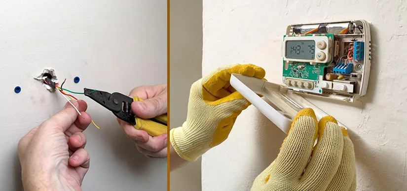

3 Simple Steps To Diagnose And Repair Your Thermostat

With the winter season in full swing and high heating costs to match, now’s the time to take an honest look at your thermostat and learn how to repair it if you suspect something is wrong.
Thermostats are responsible for controlling your home's temperature and ensuring it remains at an appropriate level. While most thermostats are very reliable, they can break or stop working due to a variety of issues.
When this happens, you’ll want to get in touch with an expert for thermostat repair in San Diego right away so that your system can return to normal operation as quickly as possible and you don’t have to deal with uncomfortable temperatures and high energy bills.
Here are three simple steps that you can follow to diagnose and repair your thermostat.
1. The air conditioner unexpectedly stops functioning.
If your air conditioner suddenly stops functioning, it could be due to an issue with your smart thermostat.
What are the steps to take?
1. Check the wiring and connections - This is to make sure all the wiring and connections are secure and properly connected. If the wiring or connections are loose or damaged, it could be the cause of the malfunctioning thermostat.
2. Check the programming settings - Smart thermostats require programming in order for them to work correctly. If the thermostat isn’t programmed correctly, it won’t be able to control the temperature correctly. The technician may need to check and adjust the programming settings on your thermostat.
3. Replace parts - In some cases, faulty components may need to be replaced in order to fix the issue. The technician will be able to identify any faulty components that need to be replaced in order for your smart thermostat to function properly again.
4. Check the thermostat settings. Make sure the temperature setting is correct and the thermostat mode is set to heat or cool. Also, confirm that the fan switch is set to auto. If any of these settings are incorrect, adjust them and see if it resolves the issue.
5. Check for blockages. Look around the thermostat to make sure there is no furniture, drapes, or other items blocking airflow into the vents.
Blocked air flow can lead to short cycling sessions or constant running, resulting in higher energy bills.
2. Inconsistency Between Thermostat Setting and Room Temperature
It's important to check the accuracy of your thermostat. If your thermostat is not calibrated properly, the readings may be inaccurate and lead to issues with regulating the temperature in your home.
A professional smart thermostat installation in San Diego technician can come in and make sure that your device is functioning properly.
- Check for any obstructions near your thermostat that could be preventing proper airflow. This could include furniture, curtains, or other items that are blocking vents or the thermostat itself. Make sure to remove any potential obstructions to ensure maximum efficiency.
- Check the batteries. Many thermostats run on battery power, so remove the cover and check to see if the batteries need to be replaced. If they’re low, replace them and see if this solves the problem.
3. Short cycling sessions or constant running
If you are noticing that your thermostat is cycling through short sessions or constantly running, then it could be due to a variety of issues. It is always best to enlist the help of a professional thermostat repair in San Diego for any major repairs or replacements.
However, there are some things you can do yourself in order to diagnose and repair the problem.
- Check the batteries in the thermostat. If the battery is low, replace it and see if this solves the issue.
- It’s also possible that the thermostat may be set incorrectly, so check the settings
- Check the settings to ensure they are appropriate for your home.
- Clean the contacts and
- The heat Anticipator should be adjusted
If these steps do not solve the problem, then it’s time to call in an expert for professional Smart thermostat installation in San Diego services.
This can ensure that you get the best possible installation of the device and correct any underlying problems with the thermostat itself.
Otherwise, you may wish to replace the thermostat yourself, but how?
Replacing the Thermostat
Replacing a thermostat can seem like a daunting task, but it can actually be quite straightforward. Especially if you live in San Diego, you have the added advantage of being able to use a smart thermostat installation service.
This service makes the installation process simple and fast so you can get your thermostat up and running quickly. But If you want to replace it yourself, follow these steps:
Take the old thermostat from the wall.
Removing your old thermostat is a critical first step when you are planning to upgrade to a smart thermostat.
Before removing the old thermostat, be sure to take note of the wires connecting it to the wall. Then use a flat-head screwdriver to remove the screws attaching the old thermostat to the wall and carefully disconnect it from the baseplate.
Once the old thermostat is removed, you are ready for the next step of installing your new smart thermostat!
For easy future identification, mark the wires.
Labeling the wires will help you easily identify them when reattaching them to your smart thermostat.
You'll need the following supplies to get started:
- Marker (preferably permanent)
- Electrical tape
- Tape measure
Once you have the necessary equipment, begin by inspecting the back of the thermostat for the wires. Use your flashlight to get a better look if needed. Once all of the wires are visible, use your tape measure to determine how many wires you have.
Then, use your marker and electrical tape to label each wire individually. When labeling the wires, make sure you include details such as what type of wiring it is, the color of the wire, and the size of the wire (if possible).
Once the wires have been labeled, you’ll be able to more easily reconnect them during your smart thermostat installation in San Diego.
Not only will this ensure that you don’t mix up the wires, but it will also save time and energy when it comes time to actually install the thermostat.
The thermostat's cables should be disconnected
Your present thermostat is not directly attached to a power source if there are only two wires connecting to it. That merely means that the programmable device you buy must be battery-operated.
If there are more than two wires, it probably has direct wiring, in which case you can choose from a wider selection of replacement models.
Utilizing the included fasteners, attach the faceplate to the wall before guiding the wires through to the new thermostat.
Verify the wiring, then put the faceplate in place
Connect the wires to the terminals on the back of your new programmable thermostat. The black wire should be connected to a common terminal, while the white wire attaches to a different one.
Your new thermostat should have a "C" or "common" terminal labeled as such; if not, look for another terminal that is not used by any other wires.
Complete the thermostat installation by connecting the wiring.
If this is not done correctly, your thermostat may not work.
To do so:
- Connect the wires to their respective terminals on the back of your programmable thermostat.
- Use a wire nut to secure these connections in place.
- Then, plug the power cord for your programmable thermostat into an outlet.
Conclusion:
After taking the time to review the 3 simple steps to diagnose and repair your thermostat, it is easy to see how important proper maintenance and repairs are for the efficient and reliable functioning of your thermostat.
While there are many DIY resources and tools that can help you with the installation and repair of your thermostat, it is always best to consult a professional.
If you live in San Diego,CA consider finding a reputable and experienced professional from EZ Heat And Air who specializes in smart thermostat installation in San Diego.
Taking this route will ensure that your thermostat will be installed correctly and will be able to provide you with efficient temperature control for years to come.